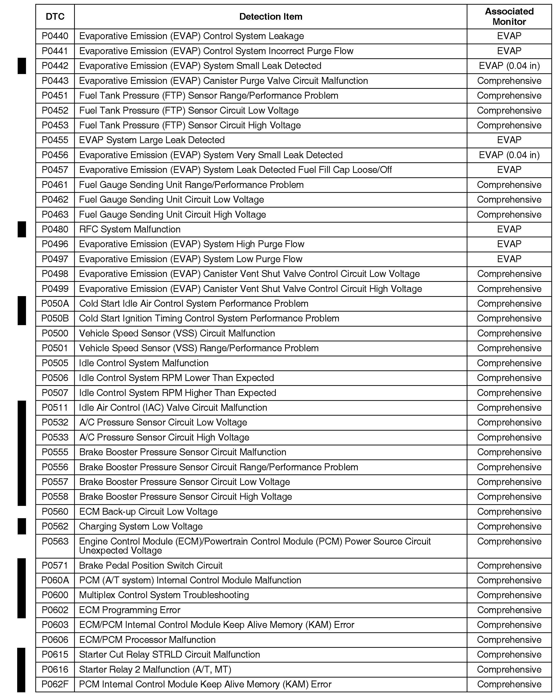

Emissions - OBD II DTC's And Associated Monitors
03-010April 2, 2010
Applies To:
All OBD II-equipped models except SLX
OBD II DTCs and Their Associated Monitors
(Supersedes 03-010, dated March 29, 2003, to revise the information marked by the black bars and asterisks)
REVISION SUMMARY
Numerous DTCs were added. Refer to the list for details.

Following is a list of all OBD II DTCs and their associated monitors for all Acuras with OBD II. No one model has every DTC in the list.

Disclaimer